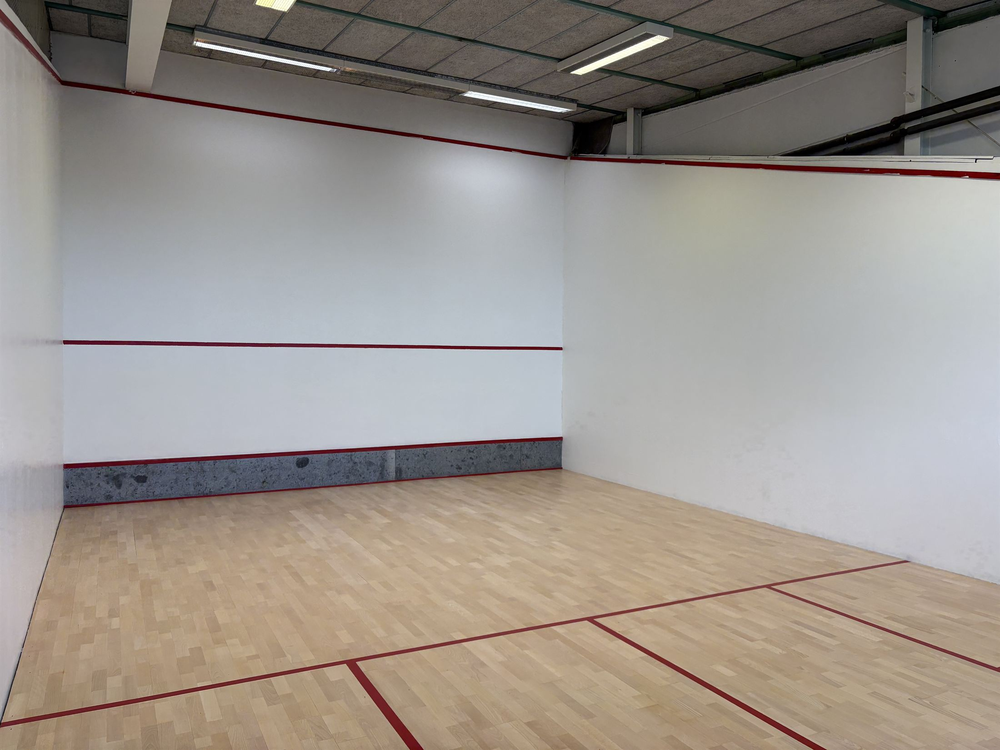

Am Empfang, telefonisch unter 07159 45151 oder online. Dienstag bis Donnerstag ab 18 Uhr lohnt es sich, ein paar Tage vorher zu reservieren.
| 30 Minuten Court | |
|---|---|
| Mo–Fr 8 bis 13:30 Uhrund 16 bis 17 Uhr | 9 € |
| Mo–Fr 17 bis 21:30 Uhr | 15 € |
| Samstag 9 bis 13:30 Uhr | 12 € |

Wellpass-Mitglieder spielen bei uns auch Squash. Den Court buchen Sie wie gewohnt am Empfang, telefonisch oder online.
Griffbänder, Bälle und Schläger gibt es bei uns am Empfang zu kaufen. Etwas zu trinken für danach auch.
Die Punkte auf dem Ball zeigen, wie stark er springt. Je weniger er springt, desto schneller müssen Sie am Ball sein.
springt am wenigstenfür geübte Spieler
springt etwas mehr
springt deutlich mehrfür Freizeitspieler
springt am meistenfür den Einstieg
In der Ersttestung messen wir Kraft, Beweglichkeit und Gleichgewicht, links und rechts im Vergleich. Die Ergebnisse besprechen wir mit Ihnen, einen Ausdruck gibt es zum Mitnehmen.
Wer Squash noch nicht kennt, kann es an diesem Vormittag ausprobieren. Dazu gibt es die Trainingsfläche und eine kurze Kraftmessung.
Schläger und Bälle stellen wir. Nach einer kurzen Einweisung geht es los.
Im Sitzen, links und rechts im Vergleich. Das Ergebnis gibt es auf einer Karte zum Mitnehmen.
Kurz an ein Gerät setzen und ausprobieren, mit leichtem Gewicht und mit einem von uns daneben.
Wer einen Squash-Court in der Nähe sucht, liest zuerst, was andere hier geschrieben haben. Ein paar Sätze von Ihnen helfen bei der Entscheidung.
Wir lesen jede Rückmeldung und antworten auf jede. Ganz freiwillig – und wenn Ihnen etwas nicht gefällt, schreiben Sie es bitte ebenso offen oder sprechen Sie uns direkt an.
Vom T aus erreichen Sie alle vier Ecken mit wenigen Schritten. Wer nach dem Schlag stehen bleibt, überlässt seinem Gegner den ganzen Court.
Der Ball fliegt dicht an der Seitenwand nach hinten, springt hinter dem Aufschlagfeld auf und bleibt in der Ecke hängen. Ihr Gegner muss weit nach hinten.
Ein guter Cross trifft die Seitenwand etwa auf Höhe Ihres Gegners. So kommt er nicht mit dem Volley dazwischen, und der Ball läuft nach hinten in die Ecke.
Der Ball geht erst an die Seitenwand, dann an die Vorderwand und landet vorn in der anderen Ecke. Ihr Gegner muss quer über den Court nach vorn.
Knapp über dem Blech gespielt, springt der Ball vorn auf und bleibt in der Ecke. Er lohnt sich, wenn Ihr Gegner hinten steht und Sie selbst nah am Ball sind.
Hoch an die Vorderwand gespielt, fliegt der Ball über Ihren Gegner hinweg in die hintere Ecke. In der Zeit kommen Sie in Ruhe zurück aufs T.
Jeder Ballwechsel bringt einen Punkt, egal wer aufgeschlagen hat. Wer den Ballwechsel gewinnt, schlägt als Nächstes auf.